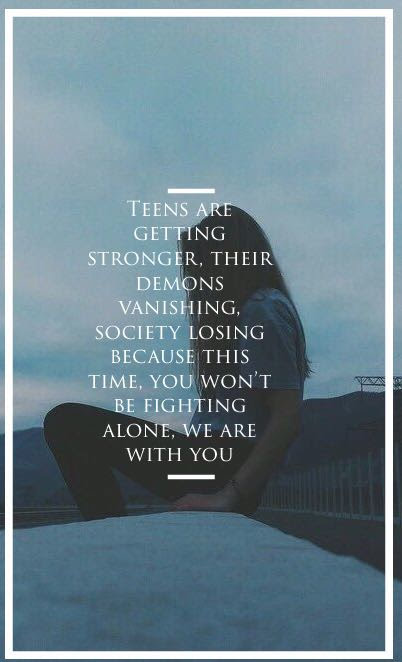

WELCOME TO THE GETHELP WEBSITE
Here we shall help you deal with your personal problems such as depression,bullying,peer pressure and other personal problems teenagers like you face nowadays.Sometimes teenagers are left dealing with these problems alone without the support of their parents or friends.Sometimes,this may lead to suicide.That's why we are here at gethelp to help you deal with these problems and ensure that you don't face them alone and a brighter future for you

DEALING WITH PREJUDICES PLACED ON YOU
All of our advices are based on true experience and events to ensure accurate treatement given to our patients
I have been dealing with prejudices for quite some time and I know how much it hurts getting a bad status for something you have not done.In fact my parents considered me a bad child.My mother and my sister thought I was a playboy and my dad thought I was a failure.This only grew worse when my sister's friends who were 18 years old associated me as a great pervert.The saddest thing here is that I was not what they thought I was,I always respected women and I have never played with someone's feelings,in fact it was a girl that broke my heart.Now I know that it hurts a lot and I even thought about commiting suicide.But I never killed myself,I continued helping people around me and I ignored my haters completely.I even decided to create this website to help people.The haters have no power,I continued living my life happily.If I had cared about what the haters said,I would not be here today.So my advice to you is that you should ignore those people and keep enjoying your life.YOU ARE NOT WHAT THEY TELL YOU.You are better than that.These people will only talk behind your back.They can't affect you in any way.Also remember that you are special and that you were brought down on this earth for a good purpose.So ignore these people and continue living because you are not what they call you,you are special.Just keep that in mind and continue living.Lift your right hand and place that on the left side of your chest,Do you hear that beating?It's your heart still beating till now.You were a given a reason to live this life and giving up so soon ain't of that reason I can ensure you that.Yes,I know it's hard for you to not care about their comments but whenever someone says something bad about you,think about something good about you.You were given this life to enjoy and to do stuff that you love.Ignore the haters and continue living